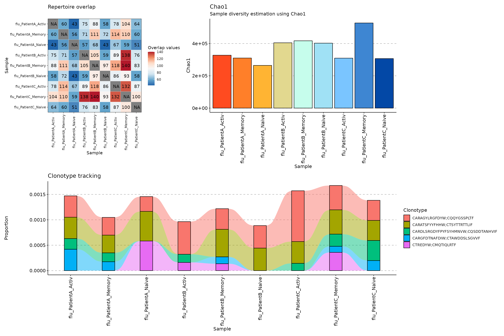

vignettes/web_only/v21_singlecell.Rmd
v21_singlecell.RmdThis is a vignette dedicated to provide an overview on how to work with single-cell paired chain data in
immunarch
Single-cell support is currently in the development version. In order to access it, you need to install the latest development version of the package by executing the following command:
install.packages("devtools"); devtools::install_github("immunomind/immunarch", ref="dev")To read paired chain data into
immunarchuse therepLoadfunction with.mode = "paired". Currently we support 10X Genomics only.
To subset immune repertoires by specific barcodes use the
select_barcodesfunction. Output ofSeurat::Idents()as a barcode vector works.
To create cluster-specific and patient-specific datasets using barcodes from the output of
Seurat::Idents()use theselect_clustersfunction.
immunarch
Load the package into the R enviroment:
For testing purposes we attached a new paired chain dataset to immunarch. Load it by executing the following command:
data(scdata)To load your own datasets, use the repLoad function. Currently we implemented paired chain data support for 10X Genomics data only. A working example of loading datasets into R:
file_path <- paste0(system.file(package = "immunarch"), "/extdata/sc/flu.csv.gz")
igdata <- repLoad(file_path, .mode = "paired")##
## == Step 1/3: loading repertoire files... ==## Processing "<initial>" ...## -- [1/1] Parsing "/tmp/RtmpEom39V/temp_libpath19746c19325ef2/immunarch/extdata/sc/flu.csv.gz" -- 10x (filt.contigs)## Warning: The following named parsers don't match the column names:
## sample,barcode,is_cell,contig_id,high_confidence,length,chain,v_gene,d_gene,j_gene,c_gene,full_length,productive,cdr3,cdr3_nt,reads,umis,raw_clonotype_id,raw_consensus_id##
## == Step 2/3: checking metadata files and merging files... ==
##
## Processing "<initial>" ...
## -- Metadata file not found; creating a dummy metadata...
##
## == Step 3/3: processing paired chain data... ==
##
## Done!
igdata$meta## # A tibble: 1 × 1
## Sample
## <chr>
## 1 flu## Clones Proportion
## 1 3 3e-04
## 2 3 3e-04
## 3 2 2e-04
## 4 2 2e-04
## 5 2 2e-04
## 6 2 2e-04
## CDR3.nt
## 1 TGTGCACACACCACCGAACTCTATTGTACTAATGGTGTATGCTATGGGGGCTACTTTGACTACTGG;TGCCAACAGTATAATAGTTATTCGTGGACGTTC
## 2 TGTGCGAGGCTATGGGGTTGGGGATTACTCTACTGG;TGCACCTCATATGCAGGCAGCAACAATTTGGTATTC
## 3 TGTACCGCTCATGGTAGGGAGGGTACTTTTGATCTCTGG;TGTCAACAATATGATAATCTCCCTCGGTACACTTTT
## 4 TGTGCAAGAGACGACTTTGCTTCGGGGGGTCGACACTTTGGCTGCTGG;TGTCAGCAGTCTGGTAACGCACCTCGAACTTTT
## 5 TGTGCAAGAGATCTGGACTACATGGACGTCTGG;TGTCAACAGAGTTACAGTACCCCTCGAACTTTT
## 6 TGTGCAAGAGGTTTAATACCCTCAGTTAGTGGCTACGACTACTACTACTACTACGGTATGGACGTCTGG;TGTCAATCAGCAGACAGCAGTGGTACTTATGAGGTATTC
## CDR3.aa V.name D.name
## 1 CAHTTELYCTNGVCYGGYFDYW;CQQYNSYSWTF IGHV2-5;IGKV1-5 IGHD2-8;None
## 2 CARLWGWGLLYW;CTSYAGSNNLVF IGHV4-59;IGLV2-11 IGHD3-10;None
## 3 CTAHGREGTFDLW;CQQYDNLPRYTF IGHV3-15;IGKV1-33 IGHD2-15;None
## 4 CARDDFASGGRHFGCW;CQQSGNAPRTF IGHV1-2;IGKV3-20 IGHD3-10;None
## 5 CARDLDYMDVW;CQQSYSTPRTF IGHV3-13;IGKV1D-39 None;None
## 6 CARGLIPSVSGYDYYYYYGMDVW;CQSADSSGTYEVF IGHV3-74;IGLV3-25 IGHD5-12;None
## J.name chain Barcode
## 1 IGHJ4;IGKJ1 IGH;IGK AGTAGTCAGTGTACTC-1;GGCGACTGTACCGAGA-1;TTGAACGGTCACCTAA-1
## 2 IGHJ4;IGLJ2 IGH;IGL AGAGCGACACCTTGTC-1;ATTGGTGAGACCTAGG-1;TCTTCGGAGGTGATTA-1
## 3 IGHJ3;IGKJ2 IGH;IGK CGCGGTATCCTCTAGC-1;TGAGCATCAGGAACGT-1
## 4 IGHJ4;IGKJ2 IGH;IGK ACTGTCCAGACGCAAC-1;CACACTCTCCGTTGTC-1
## 5 IGHJ6;IGKJ2 IGH;IGK AGGTCCGAGTCAAGCG-1;GGCGTGTTCTCTAGGA-1
## 6 IGHJ6;IGLJ2 IGH;IGL ACTGAGTCAAGCGATG-1;CTGCTGTCACGCATCG-1To subset the data by barcodes, use the select_barcodes function.
barcodes <- c("AGTAGTCAGTGTACTC-1", "GGCGACTGTACCGAGA-1", "TTGAACGGTCACCTAA-1")
new_df <- select_barcodes(scdata$data[[1]], barcodes)
new_df## CDR3.nt
## 1 TGTGCACACACCACCGAACTCTATTGTACTAATGGTGTATGCTATGGGGGCTACTTTGACTACTGG;TGCCAACAGTATAATAGTTATTCGTGGACGTTC
## CDR3.aa V.name D.name J.name V.end
## 1 CAHTTELYCTNGVCYGGYFDYW;CQQYNSYSWTF IGHV2-5;IGKV1-5 NA IGHJ4;IGKJ1 NA
## D.start D.end J.start VJ.ins VD.ins DJ.ins Sequence chain raw_clonotype_id
## 1 NA NA NA NA NA NA NA IGH;IGK 14
## ContigID Clones Barcode
## 1 NA 3 AGTAGTCAGTGTACTC-1;GGCGACTGTACCGAGA-1;TTGAACGGTCACCTAA-1
## Proportion
## 1 1To create a new dataset with cluster-specific immune repertoires, use the select_clusters function:
scdata_pat <- select_clusters(scdata, scdata$bc_patient, "Patient")
names(scdata_pat$data)## [1] "flu_PatientA" "flu_PatientB" "flu_PatientC"
scdata_pat$meta## # A tibble: 3 × 3
## Sample Patient.source Patient
## <chr> <chr> <chr>
## 1 flu_PatientA flu PatientA
## 2 flu_PatientB flu PatientB
## 3 flu_PatientC flu PatientCTo create a new dataset with cluster-specific immune repertoires, use the select_clusters function. You can apply this function after you created patient-specific datasets to get patient-specific cell cluster-specific immune repertoires, e.g., a Memory B Cell repertoire for a specific patient:
scdata_cl <- select_clusters(scdata_pat, scdata$bc_cluster, "Cluster")
names(scdata_cl$data)## [1] "flu_PatientA_Activ" "flu_PatientA_Memory" "flu_PatientA_Naive"
## [4] "flu_PatientB_Activ" "flu_PatientB_Memory" "flu_PatientB_Naive"
## [7] "flu_PatientC_Activ" "flu_PatientC_Memory" "flu_PatientC_Naive"
scdata_cl$meta## # A tibble: 9 × 5
## Sample Patient.source Patient Cluster.source Cluster
## <chr> <chr> <chr> <chr> <chr>
## 1 flu_PatientA_Activ flu PatientA flu_PatientA Activ
## 2 flu_PatientA_Memory flu PatientA flu_PatientA Memory
## 3 flu_PatientA_Naive flu PatientA flu_PatientA Naive
## 4 flu_PatientB_Activ flu PatientB flu_PatientB Activ
## 5 flu_PatientB_Memory flu PatientB flu_PatientB Memory
## 6 flu_PatientB_Naive flu PatientB flu_PatientB Naive
## 7 flu_PatientC_Activ flu PatientC flu_PatientC Activ
## 8 flu_PatientC_Memory flu PatientC flu_PatientC Memory
## 9 flu_PatientC_Naive flu PatientC flu_PatientC NaiveMost functions will work out-of-the-box with paired chain data.
p1 <- repOverlap(scdata_cl$data) %>% vis()
p2 <- repDiversity(scdata_cl$data) %>% vis()
target <- c("CARAGYLRGFDYW;CQQYGSSPLTF", "CARATSFYYFHHW;CTSYTTRTTLIF", "CARDLSRGDYFPYFSYHMNVW;CQSDDTANHVIF", "CARGFDTNAFDIW;CTAWDDSLSGVVF", "CTREDYW;CMQTIQLRTF")
p3 <- trackClonotypes(scdata_cl$data, target, .col = "aa") %>% vis()## Warning in melt.data.table(.data): id.vars and measure.vars are internally
## guessed when both are 'NULL'. All non-numeric/integer/logical type columns are
## considered id.vars, which in this case are columns [CDR3.aa, ...]. Consider
## providing at least one of 'id' or 'measure' vars in future.
(p1 + p2) / p3## Warning: The `.dots` argument of `group_by()` is deprecated as of dplyr 1.0.0.
## This warning is displayed once every 8 hours.
## Call `lifecycle::last_lifecycle_warnings()` to see where this warning was generated.
Several functions may work incorrectly with paired chain data in this release of immunarch. Let us know via GitHub Issues!